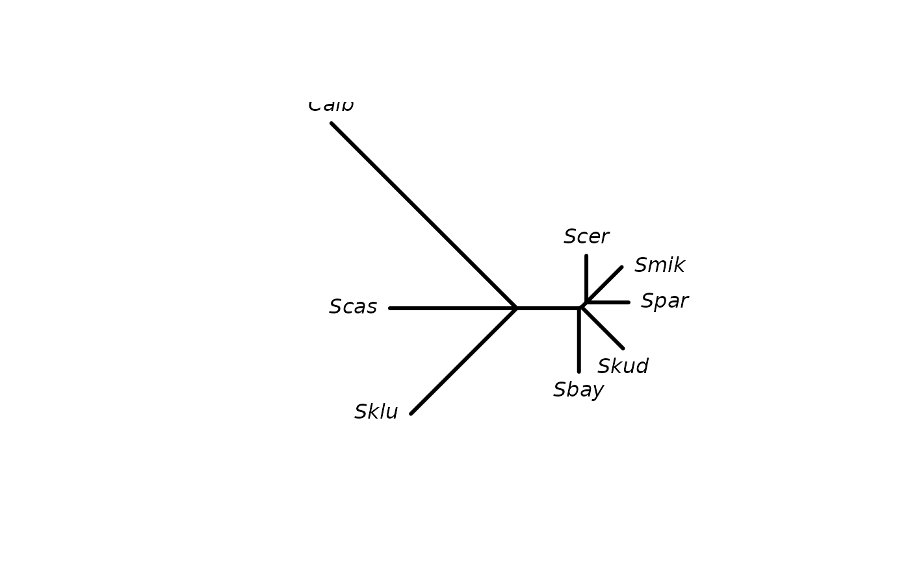

splitsNetwork estimates weights for a splits graph from a distance
matrix.
Value
splitsNetwork returns a splits object with a matrix added.
The first column contains the indices of the splits, the second column an
unconstrained fit without penalty terms and the third column the constrained
fit.
Details
splitsNetwork fits non-negative least-squares phylogenetic networks
using L1 (LASSO), L2(ridge regression) constraints. The function minimizes
the penalized least squares
$$\beta = min \sum(dm - X\beta)^2 + \lambda \|\beta \|^2_2 $$
with respect to $$\|\beta \|_1 <= \gamma, \beta >= 0$$
where \(X\) is a design matrix constructed with designSplits.
External edges are fitted without L1 or L2 constraints.
References
Efron, Hastie, Johnstone and Tibshirani (2004) Least Angle Regression (with discussion) Annals of Statistics 32(2), 407–499
K. P. Schliep (2009). Some Applications of statistical phylogenetics (PhD Thesis)
Author
Klaus Schliep klaus.schliep@gmail.com
Examples
data(yeast)
dm <- dist.ml(yeast)
fit <- splitsNetwork(dm)
net <- as.networx(fit)
plot(net)

write.nexus.splits(fit)
#> #NEXUS
#>
#> [Splits block for Spectronet or SplitsTree]
#> [generated by phangorn 3.0.0.0 ]
#>
#> BEGIN TAXA;
#> DIMENSIONS ntax=8;
#> TAXLABELS Scer Spar Smik Skud Sbay Scas Sklu Calb ;
#> END;
#>
#> BEGIN SPLITS;
#> DIMENSIONS ntax=8 nsplits=11;
#> FORMAT labels=left weights=yes confidences=no intervals=no;
#> MATRIX
#> 1 0.0651863191393167 1,
#> 2 0.0587181503590668 1 3 4 5 6 7 8,
#> 3 0.0696966322251354 1 2 4 5 6 7 8,
#> 4 0.00922627016465058 1 2 3,
#> 5 0.0814873490413281 1 2 3 5 6 7 8,
#> 6 0.00406554599095658 1 2 3 4,
#> 7 0.0886778824161061 1 2 3 4 6 7 8,
#> 8 0.0867081880409384 1 2 3 4 5,
#> 9 0.176465211301922 1 2 3 4 5 7 8,
#> 10 0.208305976530992 1 2 3 4 5 6 8,
#> 11 0.36479757741116 1 2 3 4 5 6 7,
#> ;
#> END;